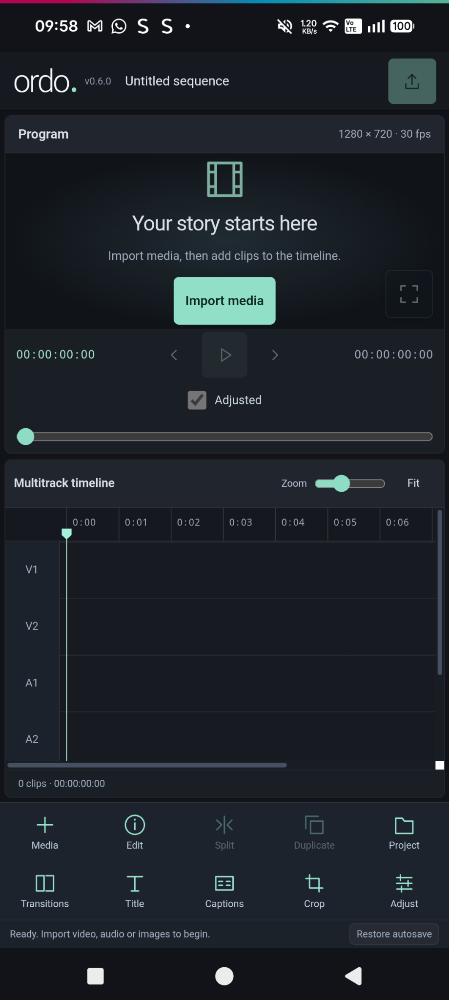

Build it, layer by layer.
Two picture tracks, two audio tracks and dedicated title and caption lanes. Trim, split, duplicate and arrange your clips with touch controls.
MADE FOR ANDROID v0.6.0
Your footage. Your rhythm. Your story.
A video editor that puts the creative controls in your hands.
Free & open source · No account needed · Development build

A PLACE FOR EVERY PART OF YOUR STORY
Bring your video, images and sound together. Then give each detail the attention it deserves.
Two picture tracks, two audio tracks and dedicated title and caption lanes. Trim, split, duplicate and arrange your clips with touch controls.
Adjust brightness, contrast, saturation, highlights, shadows and more. Crop to familiar ratios or find your own frame with free sizing.
Choose from 66 offline Google Fonts for titles and captions. Set size, colour, rotation and styling. Bring in SRT or VTT captions, or write your own.
Start, End and Between transitions help shape your picture. Fade audio in or out, crossfade adjacent sound clips, and set the duration in seconds.
Audio EQ, gain & pan · Apply to all · Remembered media · Fullscreen preview · Undo & recovery
FROM FIRST CLIP TO FINAL CUT
An editing workspace built around the things you reach for, right where you need them.
Read the Android guideImport video, photos and audio. See thumbnails and durations, then add individual assets or all your media at once.
Trim and layer, shape the colour, add words and connect the moments. Preview your adjustments as you work.
Pick your resolution, frame rate and quality, then export locally. Save your .ordo project to pick up where you left off.
Currently supports exports up to 2 minutes and a 256 MB Android save limit. Resolution options up to 4K and H.265 encoding depend on your device. See current limits ↗
A FEW THINGS TO KNOW
Yes. Ordo is free and open source under the MIT licence. You can explore its code, follow development and report issues on GitHub.
Download the APK on your Android phone, open the downloaded file and allow installation from that source if Android asks. This is a development build, so keep your project files and original media backed up.
No account is required. Editing and rendering happen on your device, and fonts are bundled for offline use. You choose which media the app can access.
No. Ordo focuses on hands-on editing tools, including conventional picture adjustments and audio processing.
Ordo is distributed as an Android app. This website introduces the editor and provides the APK download, documentation and source code.